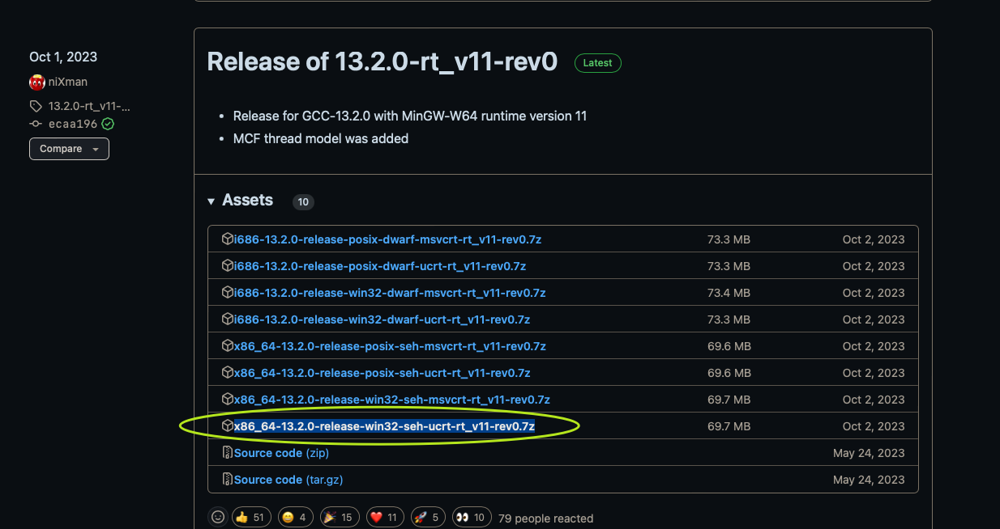

2024-03-09
C
修改于: 2024-03-09环境配置
Windows 下环境
- 相关资源:
- 官网文档: https://www.mingw-w64.org/downloads/#mingw-builds ,
- 官网文档源码(只是列出来, 用处不大) https://github.com/mingw-w64/mingw-w64.github.io
- mingw 下载地址: https://github.com/niXman/mingw-builds-binaries/releases
- 库说明: https://winlibs.com/
我用的是 mingw, 下载地址: https://github.com/niXman/mingw-builds-binaries/releases , 选择适合自己版本的下载就行.
我只在 Windows64 下使用, 选的是 x86_64-13.2.0-release-win32-seh-ucrt-rt_v11-rev0.7z

- 版本说明
- i686 是 32位的, x86_64 是 64位的
- POSIX 表示（与其他平台的最佳兼容性） ; WIN32 表示 (本机 Windows 线程，但缺少 POSIX 线程 / pthread.h) ; MCF (自 GCC 13 起，另请参阅：MCF Gthread 库)
- ucrt : 微软提供的通用c运行库; msvcrt : 微软提供的c++运行库，兼容c. 除非你的目标是旧版本的 Windows，否则 UCRT 作为运行时库是更好的选择
注解
gcc在 Windows ， linux 和 MacOS 的下的命令不一定互通， 例如 linux 下的指令 make ， 但是在 windows 下会变成 mingw32-make, 有需求可以自己做个链接
CLion 断点失效
我删除 .idea 后重新打开就可以了...